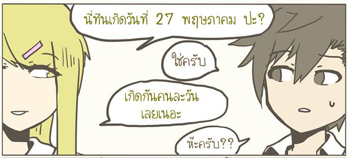
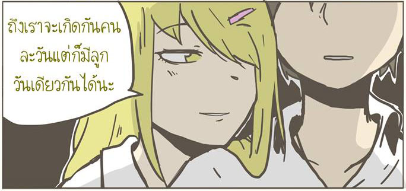
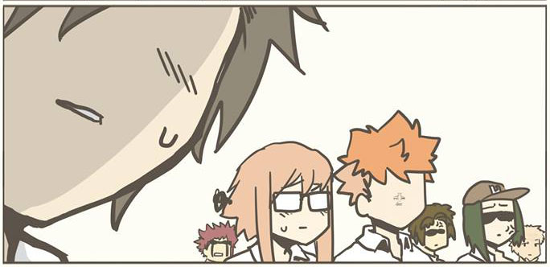

<!--
  Generated template for the Nomsod2Page page.

  See http://ionicframework.com/docs/components/#navigation for more info on
  Ionic pages and navigation.
-->
<ion-header>

    <ion-toolbar>
        <ion-row no-padding>
    
          <ion-col>
            <ion-buttons >
                <button ion-button icon-only small (click)="backEp()" >
                  <p>EP 1</p>
                  <ion-icon name="arrow-back"></ion-icon>
                </button>
              </ion-buttons>
          </ion-col>
    
          <ion-col>
              <ion-title text-right>| Nomsod Ep.2 |</ion-title>
          </ion-col>
    
        <ion-col>
            <ion-buttons end>
              <button ion-button icon-only small (click)="nextEp()" >
                <p>EP 3</p>
                <ion-icon name="arrow-forward"></ion-icon>
              </button>
            </ion-buttons>
        </ion-col>    
    
        </ion-row>
      </ion-toolbar>


</ion-header>


<ion-content padding>
    <ion-slides pager>

        <ion-slide>
          
        </ion-slide>
      
        <ion-slide>
          
        </ion-slide>
      
        <ion-slide>
          
        </ion-slide>

      </ion-slides>
</ion-content>
